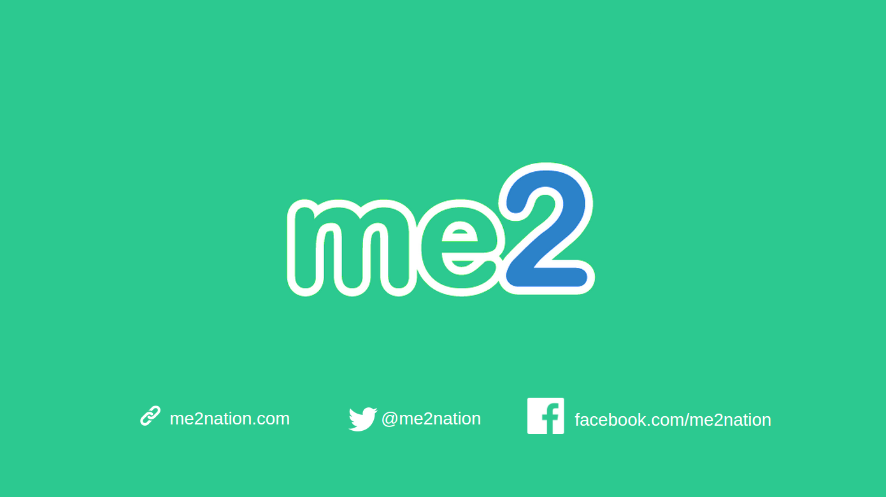
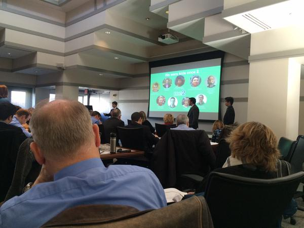
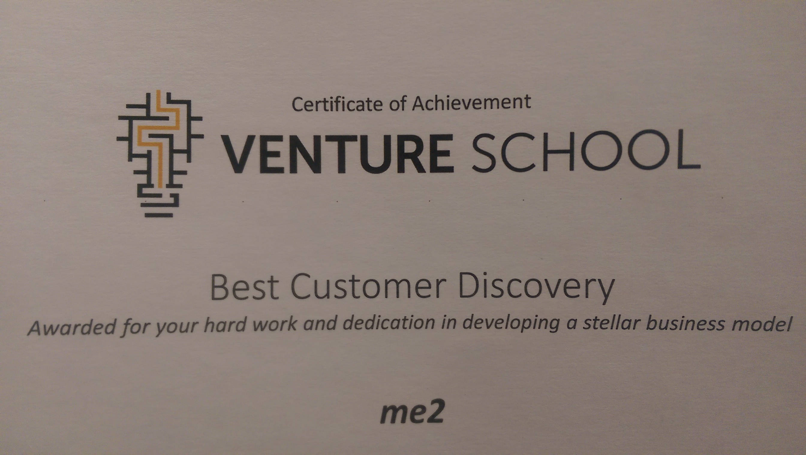
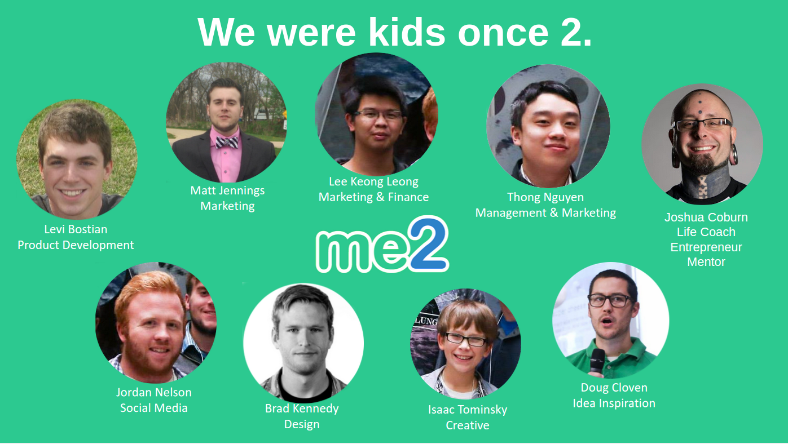

This week in the world of me2...
We did it! We survived the Venture School program! 6 weeks of intense customer discovery to validate our business model to increase the chances of success for me2. It was a tough 6 weeks but we are done...or are we?!

We survived Venture School.
Last week was dedicated our week entirely to our final Venture School pitch Friday morning. Monday, Tuesday and Wednesday were spent all day working on our slide deck. Thursday was spent at the University sitting in on some last lectures and discussions about how to give a perfect presentation. Then came the big day Friday where all 10 teams gave their final pitch of the program to demonstrate what they have learned and accomplished over the course of the program.
Our slides consisted of a general non-technical overview of how the product works, a timeline of milestones we aim to hit from now until early 2016, an outline of key partnerships, competition table, team members slide, and more.

First slide of pitch deck. Looked really good up on a big screen!
After an entire week of preperation, the big moment finally came. Friday morning the team and I woke up and headed to the University one last time. This was our time to show what we have worked so hard at the past 6 weeks. Matt and I stood at the front and began our pitch...
"Stand up if your parents are divorced."
Kind of makes you jump a little in your seat doesn't it? This was how I started out our pitch. A few weeks ago I was on YouTube watching one of Joshua Coburn's talks he did at a high school. Josh is known for being serious in his talks (which is one reason why he is so absolutely amazing at what he does) and he enjoys asking the audience to participate by asking them serious questions like if their parents are divorced. I was watching his talk and when he asked the audience to stand up after he asked a serious question, I did not know how to respond. Are people really going to stand up?! Within 2 seconds, a handful or so stood up immediately and then after another 10 seconds, half of the entire audience was standing. The emotion in that room was astonishing. I was blown away that Josh was able to grab their emotions and show them that they were not alone. They could all relate together on that one life experience. That is what I wanted to do in our presentation.

After the presentation my team and I were very proud of what we did on center stage. We came to impress and we felt we succeeded. However we were not going to find out for sure until after all 10 teams did their pitch and we could talk to the mentors listening in.
After the 10 teams finished up their pitch, the results we heard from people were awesome! Everyone that we talked to afterwards said we had a super pitch. They did say that in the beginning when we asked for people to stand if their parents were divorced was a little uncomfortable but it did the job. We are ok with the fact that it was a little different. If we are able to get our audience to understand the fact that they are not alone, we did our job.
We won Best Customer Discovery!!!
Friday after all 10 teams pitched their final presentations, the mentors got together and voted on teams to acknowledge their accomplishments. me2 won the Best Customer Discovery award!!! We are very proud of this accomplishment because the whole 6 week Venture School program revolves around conducting Customer Discovery so if the mentors say we had the best discovery, I would say that is a pretty good compliment!

We are done with the Venture School program, but Venture School lives on.
Sure, we completed the Venture School program but that does not mean that we are done with Venture School activities. Venture School is an accelerated 6 week program to validate your business model. However, we have not yet fully validated our business model. We still have many weeks ahead of us that we need to conduct validation on many aspects of the business model.
One last THANK YOU to Venture School and the lean startup.
I have said it once and I will say it again, Venture School and the lean startup methodology have been the greatest things that has happened to me2. We sent our little baby through a program to test what it was made of. Along the way, it got bullied a little here and there and congradulated periodically. When the program ended, our once little baby gained a lot of maturity. We are not ready to let our little baby go out into the real world yet but it is on its way. We are proud of what me2 has turned out to be in just these short 6 weeks.
If you have not yet, read The Lean Startup. This is how we run our startup business and we all feel that you should run yours like it too.
Thank you Venture School! Thank you lean startup! Thank you, thank you, thank you!

Final slide in pitch deck Friday at Venture School. We were kids once 2 you know.
Every young person struggles at some point in life. We are here to say #me2. You are not alone. @me2nation
Twitter
Instagram
Facebook
Website
Blog